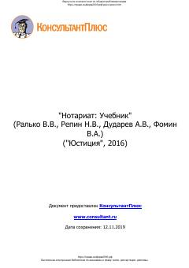

НУRossiya notariat tizimining huquqiy asoslari va faoliyatiga bag'ishlangan o'quv qo'llanma.
Ushbu darslik Rossiya Federatsiyasida notariat institutining huquqiy mohiyati, tashkil etilishi va faoliyatini tizimli ravishda yoritib beradi. Kitobda notariusning huquqiy maqomi, notarial harakatlarni amalga oshirish jarayonlari hamda ushbu sohadagi qonunchilikdagi o'zgarishlar tahlil qilingan.